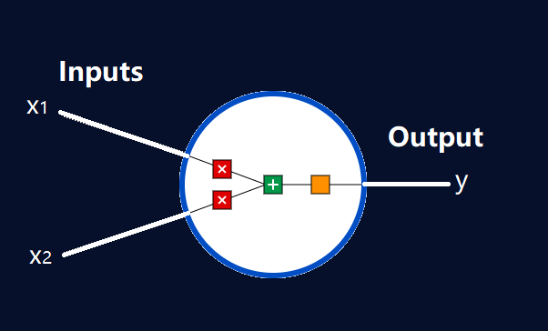
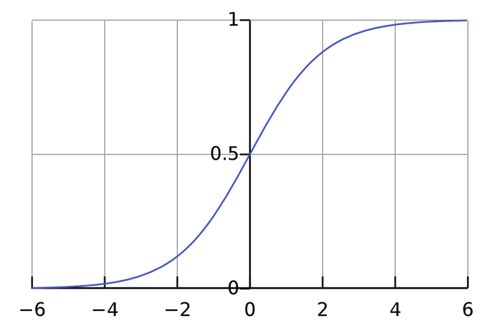

Artificial neural networks or connectionist systems are computing systems vaguely inspired by the biological neural networks that constitute animal brains. Such systems "learn" to perform tasks by considering examples, generally without being programmed with task-specific rules.
First, we have to talk about neurons, the basic unit of a neural network. A neuron takes inputs, does some math with them, and produces one output. Here’s what a 2-input neuron looks like: 
3 things are happening here. First, each input is multiplied by a weight:
Next, all the weighted inputs are added together with a bias b:
Next, all the weighted inputs are added together with a bias b:
The activation function is used to turn an unbounded input into an output that has a nice, predictable form. A commonly used activation function is the sigmoid function:  The sigmoid function only outputs numbers in the range (0,1). You can think of it as compressing (−∞,+∞) to (0, 1) - big negative numbers become ~0, and big positive numbers become ~1.
A Neural Network is made by the combination of these Neurons. Different types of neurons make up different neural networks, which may be used for purposes. Some of the neural networks discussed here are: